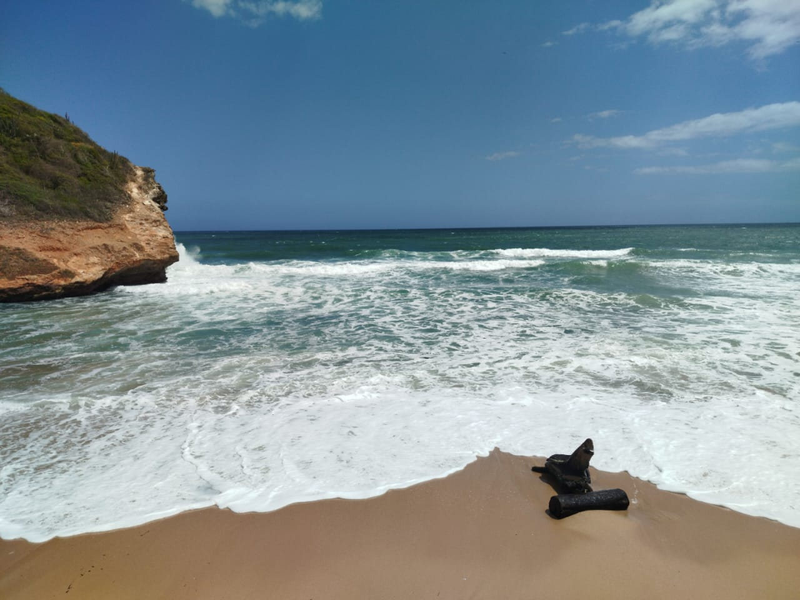
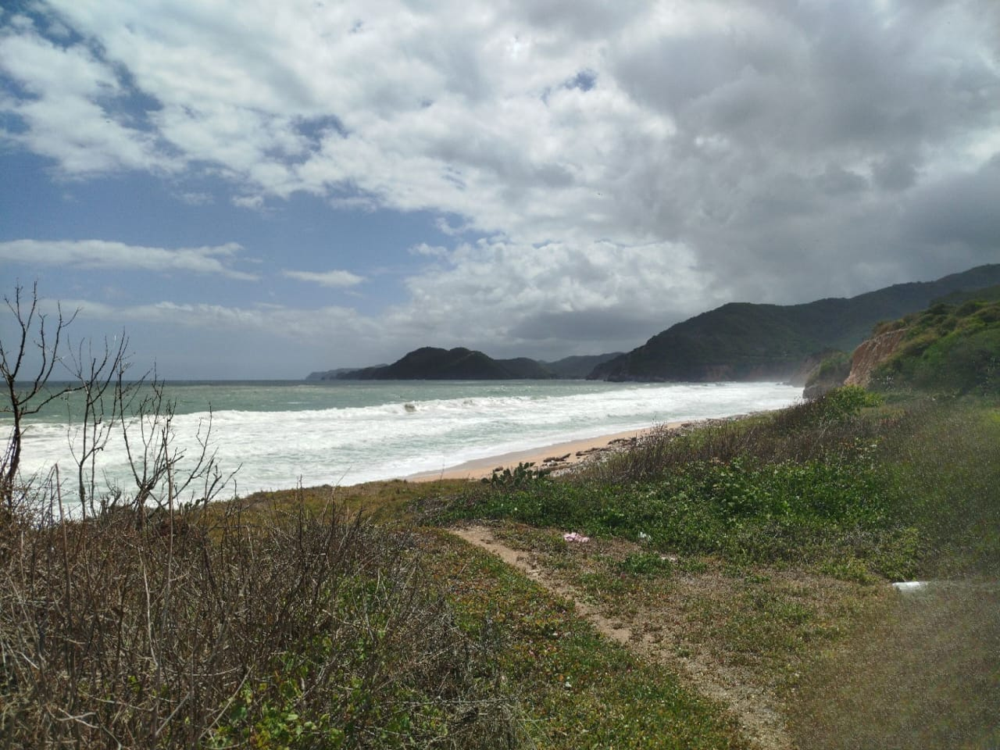
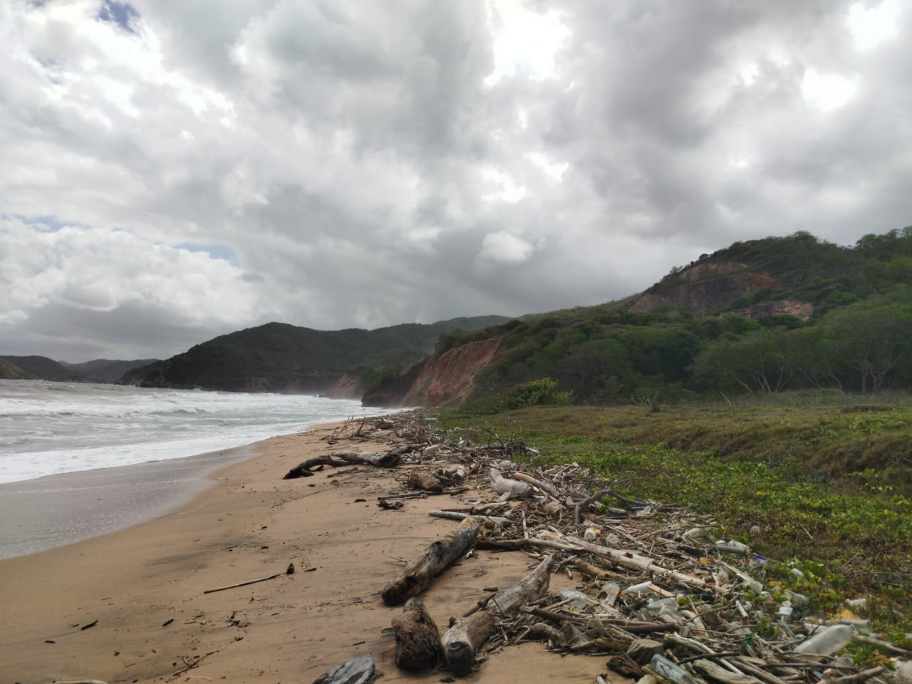
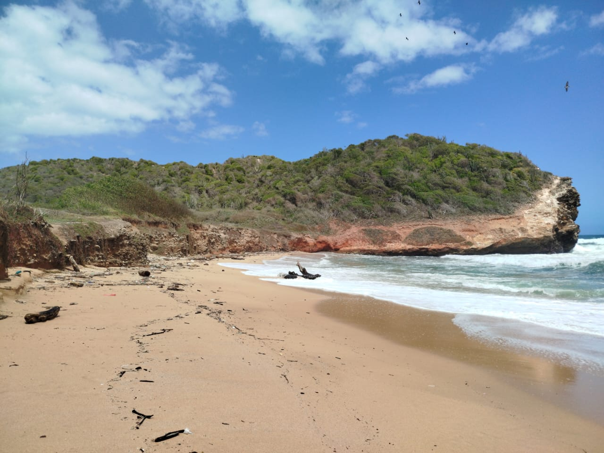
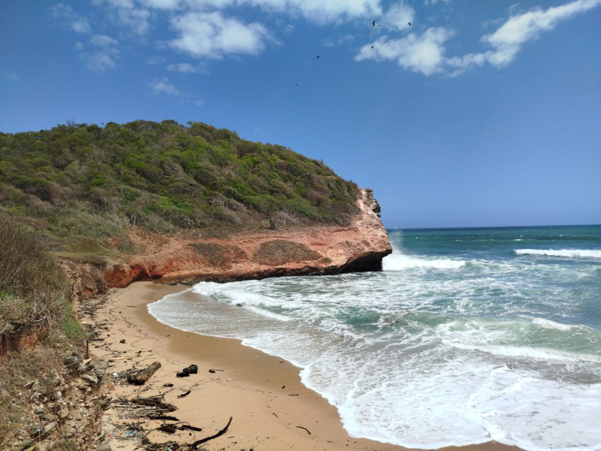

En la salida de El Morro de Puerto Santo se revela un paisaje costero marcado por el contraste entre los cerros de tierra rojiza y el azul intenso del mar. A diferencia de los destinos turísticos tradicionales, aquí el entorno se mantiene rústico y funcional, conservando una atmósfera de tranquilidad que solo se interrumpe por el sonido del oleaje fuerte. Es un espacio ideal para quienes disfrutan de la fotografía de naturaleza y de observar la dinámica de la costa en su estado más puro, sin las aglomeraciones ni el comercio habitual de otras playas.




Para alcanzar la orilla, es necesario recorrer un sendero natural que atraviesa la vegetación xerófila característica de la zona. Es sumamente importante que los visitantes transiten con atención, ya que en el camino existe una presencia notable de culebras entre los matorrales, por lo que se recomienda el uso de calzado cerrado y evitar salirse de la trocha marcada. Esta breve caminata es el preámbulo a una playa que, si bien no es un destino de lujo, ofrece una experiencia auténtica para pasar un rato diferente en contacto directo con los elementos del oriente venezolano.
Cómo Llegar
El acceso es por un sendero natural hacia los límites exteriores del Morro. Se recomienda calzado cerrado y atención al suelo por la fauna silvestre (culebras) antes de bajar a la orilla.
Mejores Días
Cualquier día de la semana es apto si buscas soledad, aunque la marea baja es el momento técnico ideal para tener más espacio de arena disponible.
¿Por Qué Visitarla?
Por su ubicación retirada y su ambiente auténtico. Es el sitio perfecto si quieres ver el Morro desde sus bordes y disfrutar de un mar con carácter, lejos del bullicio.
La Playa de La Loka
Uno de los aspectos más determinantes de esta playa es el carácter de sus aguas, que presentan un oleaje movido y constante debido a su ubicación abierta. La marea alta suele subir con rapidez, cubriendo gran parte de la franja de arena y arrastrando troncos o restos orgánicos que quedan depositados en la orilla, lo que le da ese aspecto salvaje que se aprecia en las fotos. Debido a la fuerza de las olas y a que la profundidad puede cambiar de forma imprevista, se recomienda precaución extrema al bañarse; no es un mar de aguas calmadas, sino un espacio donde la naturaleza impone sus reglas. Por ello, aunque es un sitio excelente para contemplar el paisaje y ver la salida de los cayucos pesqueros, siempre se debe mantener un respeto preventivo hacia la corriente y las condiciones climáticas del momento.
